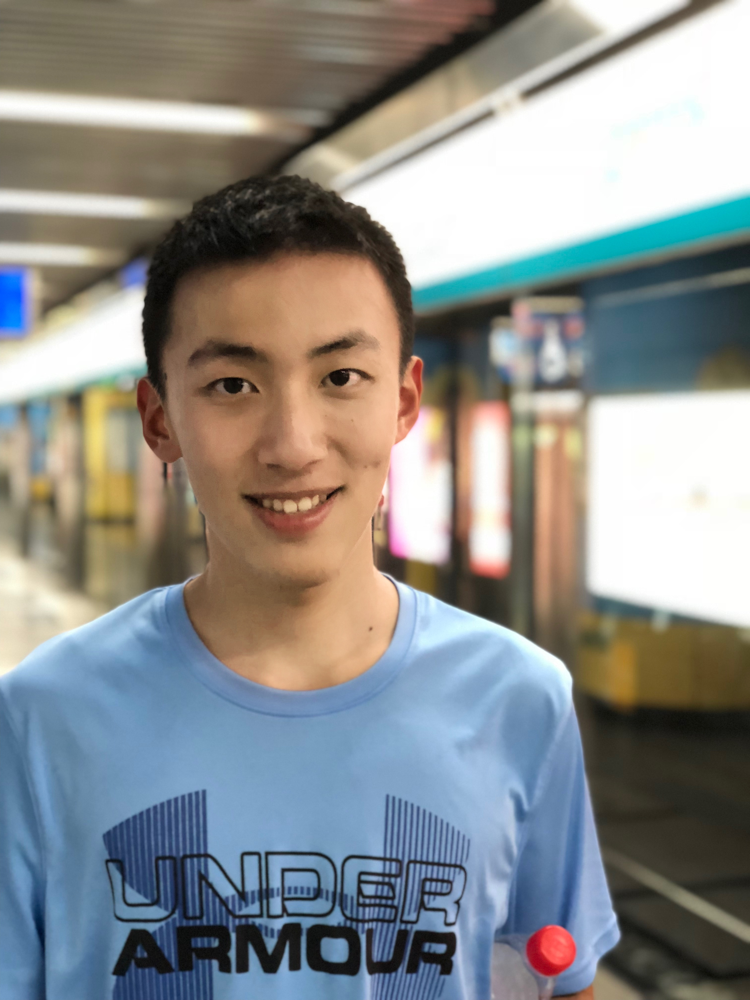

Zhengning Wu (武正宁)Ph.D. Student
Supervised by
Prof. Tongliang Liu
Address: J12/ 1 Cleveland St, Darlington, NSW 2008, Australia
|
 |
Biography
I am a first year bachelor-straight-to-Ph.D student, supervised by Prof. Tongliang Liu, at the School of Computer Science, The University of Sydney (USYD). I received my Bachelor of Information Technology (Honours) degree, with First Class Honours from the University of Sydney (USYD) in September 2021. My research mainly focuses on label-noise learning and semi-supervised learning.
Education Background
-
Ph.D. student, 2022.02 - 2025.02 (expected) The University of Sydney, Australia, advised by Prof. Tongliang Liu
-
Bachelor of Information Technology (First Class Honours) , 2017.07 - 2021.7 Major in Computer Science Minor in Information System The University of Sydney, Sydney, Australia
Publications
LR-SVM+: Learning Using Privileged Information with Noisy Labels
Zhengning Wu, Xiaobo Xia, Ruxin Wang, Jiatong Li, Jun Yu, Yinian Mao, Tongliang Liu
IEEE Transactions on Multimedia, 2021.
An estimation distribution algorithm for wave-picking warehouse management
Jingran Liang, Zhengning Wu , Chenye Zhu & Zhi-Hai Zhang
Journal of Intelligent Manufacturing, 2020.
Internship Experience
- Research Intern, Department of Industrial Engineering, Tsinghua University, 2017.12-2018.2.
- Data Analyst Intern, IBM & ICBC, Beijing, 2018.6-2018.9
- IT Intern, Siemens China, Beijing, 2019.12-2020.2
- Research Intern, Alibaba Group, Hangzhou, 2021.8-Present
Award and Honors
- Faculty of Engineering International Tuition Fee Research Scholarship, the University of Sydney, 2022
- First-Class Honours in Bachelor of Information Technology, the University of Sydney, 2021
| © Zhengning Wu | Last update: February 2022 |